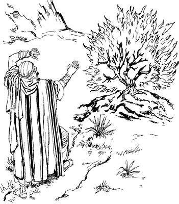
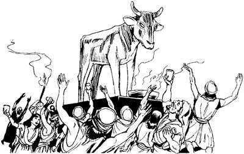
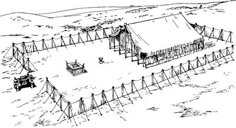

Allahri Israel nimiap ma'al taekne ukuma sembe Stefanusti ambatsiogha
Israel nimi sikinisa samenag wamekne sembe Stefanusti ambatsiogha (7:1-16)
7
1 Memne Allah sembe pairopnang sikini nubunge ponekori hailamogti, “Sindi lebangne sik te?” aro haibaog. 2 Haibaogpa Stefanusti, “Nangkabo, nani yabo ka'eamsu! Anam nunisang Abraham Kharan pin komag Mesopotamia wamogpa, Allah warero libango aropne Abraham wamoghag lag taog. 3 Lag taogti, Allahri yubu lelamogti, ‘Anenge mog so'o asag agha lambamendi, ankabo laploa Nari mog so'o nhon ambatkenenge nhonag pululam,’ seog. 4 Allahri Abrahamag wene seogpa, Kasdim nimi mog so'o laplobi agha as Kharan piogti wamog. As Kharan aneko wamogpa, Abraham ili tebaogpa, Allahri lebogha sunsunum uro nu Yahudinang wamap so'o eneag Allahri Abraham payaogpa, Abraham wamog. 5 ‘Pululam,’ seogpa, yaoghag ane, ‘So'o ologha babe an ngai talulam,’ ana babe kom. ‘Ot anap andi mangarobari mangaroba mangkahyikneap amik ngai talulom,’ aro Allahri Abrahamag salag lero ambarog. Abene li elmabo babe nhon wamna komag, oroghag agha ambarog. 6 Ambarogti nen Allahri Abrahamag yubu lelamogti, ‘Andi mangorabari mangaroba mangkahyikne nimiri so'oag nimi sekelanan nang saog uro nimiri so'oag wamukang. Wamikpa so'o eneko nimiri sinag heng tai buka tau buka ulamlea teng-tengne (400) wamikpa, so'o eneko nimiri olamsiikti, aruklamsiikpa, ikinaba maghan og uro polamukang. 7 Nimiri so'oag aneko arukna nembamsiikpa, “Olamsiik nimi taneko sindi ulamikne mali,” kembaneri, Nari tam karebiagha lunuro obahinun. Obahineba, anisag yabo lambaikti, mog so'o Yerusalem ane Na omekanukang,’ aro Abrahamag Allahri ambarog. 8 Ambarogti, Allahri Abrahamap yubu nikne lero salag palilamogti, ‘Nari salag palilamnange nene ekon tan koma el uro wamlulom aro anap, anmaboap nengabo niap nengabo kon karebel dalamlulom,’a aro yubu nikne lero salag pibog. Abrahamdi elme Ishak mangaro aogti, ‘Allahap nari mangarobari mangaroba mangkahyikneap ma'aptanumunge ekon taikag,’ aro ae ik lin sum Allah ambarogne sunsunum uro elme Ishak nengabo kon karebaog. Abrahamdi Ishak mangkaogpa, Ishakti Yakub mangkaogpa, Yakubti kongap nang a'obare mangkahiogpa, sindi nimi sisa a'obare likto piekti, nunisa yabo nubunang taek,” Stefanusti ambarelamsiog.9 Stefanusti nen tipto ambarelamsiogti, “Nunisa yabo a'obare nubunang enekori sikinipsae Yusup sembe, ‘Nuni Yakubti nu sembe olog uro o'ona senelamsildi, elme Yusup sembe agha maikno o'ona senelamla,’ aro wana mali senelamek. Wana mali senelamekti, ‘Mesir nimi arukna talul,’ aro eldoyabori kamna kapto tobek aghana, Allahri sikinipsae Yusup yepto piamog. 10 Yepto piamogti, tam malinge elag uaekne orog nembaogpa, Mesir nimi sembe yubu sia leropne Firaunag yaog. Elag yaogpa, Allahri Yusup yeplamogpa, wana seneragna heklamogpa, Firaundi Yusup sembe ‘Wali uro awe tolamla,’ aro awi senelamog. Yusup sembe awi senelamogti, Firaundi ‘Mesir so'o saelbamlulam,’ aro towalengkaogpa, Yusupti Mesir so'o saelbamog. Mesir so'o saelbamogpa, Firaundi aeag uropne babe, Firaun el tamag awe toro ulamekne babe, ‘Pia ulamlulam,’ aro Yusup saeag nembaog. 11 Towalengkaogpa wamekpa, Mesir so'oag babe, Kanaan so'oag babe, kwaneng yo nubunge waelbaogpa, kwaneng yo seklelamek. Kwaneng yo seklelamekpa, nunisa yabo Kanaan wamekne babe kwaneng telamek kom. 12 Unu amogpa, ‘Mog so'o Mesir kwaneng telamang,’ ana Yakubti ka'ebaogti, nunisa yabo nubunangag ‘Mesir kwaneng tol pululom,’ aro pogsiog. Pogsiogpa, sin sumene alnirop sum ‘Kwaneng tobukap,’ aro piekti, kwaneng samoro payaekti, olog wamek. 13 Nen ik phendep sum babe piekpa, Yusupti, ‘Na a'unipsae wamna,’ aro eldo yabo ambatsiogpa, Firaun babe Yusup ili eldo yabo wamekne sembe el taog. 14 El taogpa Yusupti iliap, eldo yabori maboap kelaboap, ‘Na ya'aghag yalulom,’ aro yopsiogpa, ili Yakubap nhon yaek nimi taneko teng phende eptopne saektara bare (75) yaek. 15 Mog so'o Mesir piekti wamekpa, Yakub tebaogpa, nunisa yabo nubunang babe wamekti tebaek. 16 Nunisa yabo nubunang teplameka Sikhem poa pina sikil palamsiek. Sikil palamsiekag samen Abrahamdi kamna kapto Hemor elmabo saeag agha kal ma'al kirik wana solomneap ag agha toboghag aneko Sikhem mog so'oag sikil palamsiek,” aro Stefanusti ambatsiog.
Israel nimi Mesir so'o wamekne sembe Stefanusti ambatsiogha (7:17-29)
17 Stefanusti nen tipto ambarelamsiogti, “Allahri Abrahamag salag lebogne neneko, Israel nimi Mesir wamekne maikno tangto palamogpa, Allahri salag lebogne sunsunum uro pinepne peram talamog. 18 Peram talamogpa, Mesir nimi yubu sia leropne Yusupti uaogne ekonne nhon mog so'o Mesir saelbamsinepne waelbaog. 19 Waelbaogne ponekori nunisa yaboag orolenange lero unulamsiogti, ‘Maikno taikag,’ aro sin aruklamsiogti, ‘A'undi mabo maghag tobogsiro sin ohiro ulamlulom,’ aro aruklamsiog. 20 Undo unulamog li eneag Musa mangaptaogpa, Allahri Musa sembe ‘Wali,’ senelamog. Ili ilindi aeag wal wilindi tognoro mo'oro piamdek. 21 Wal wilindi taogpa, mag abolag pabiogti, pibog. Pibogpa, Firaun elmangkeldi me aneko ibogti, tobogti, eltangkeldi me saog uro mo'ol tolamog. 22 Musa neneko Mesir nimiri nia mangkina uropne ambarelamekpa, sindi uropne leropne el talamogti, wana heklamsiog. Musa nenekori yubu lenne babe, nia ua unne babe mikip uro ulamsiog. 23 El mangkaekne heng tai buka tau buka ulamogha teng nhon epto naual bare wamogpa, ‘Nangkabo Israel nimi kemel phinun,’ aro wanaag seneraghog. 24 Kemel phinun,’ aro palamoghag agha Mesirne nhondi elkae Israelne nhon tam oroghag agha olamogha ibog. Ibogti, Musari elkae pelepto elkae Israelne ponekoag sip taogti, Mesirne poneko ya'ag obog. 25 Musa eldamne wanaag agha seneragamognena, ‘Nangkabo Israel nimiri na sembe wali sembaukang. “Mesir nimiri Israel nimi olamsiangba, Allahri, ‘Taulbahilulam,’ aro poglange Musa ane,” sembaukang,’ sembaog aghana, el sembe undo seneraglamek kom. 26 Mabogha kwelekaogpa, lukunap Israelnang phende talamdeka kembahiogti, ‘Nari ma'abahinun,’ aro piog. Sinag piogti, ‘Nangkabo, a'unna sa'ambe ol talamdom? A'unna eldo ilipsae saog uro wamdom kom te?’ seog. 27 Seogpa, talamdekti, elkae obogne ponekori Musa wepto pil piogti, yubu lelamogti, ‘Etneri, “Nu saelbamsulul,” aro etneri towalengkakeo? Etneri, “Tam kareplamlulam,” seori, towalengkakeo? 28 Ambhum Mesirne obomne neneko saog uro wene na babe omnululam te?’ aro haibaog.
29 Wene seogpa, Musa ka'ebaogti, log lelem laplobi agha mog so'o Midian piogti, nimi sekelingkiropne saog uro wamog. Aneko pina wamogti, me nengabo me phende mangkahiog.
Israel nimi pai aldesag wamekne sembe ambatsiogha (7:30-43)
30 “Mog so'o Midian wamogpa, hengkun tai buka tau buka ulamogha teng nhon epto naual bare taogpa, ik nhon sum Musa poneko Yim Sinai tamag yabalamogti, pai aldes saog urobag wamog. Yim Sinai tamag yabalamogti, kemelamogpa, Allahri El arukna imagne malaikat poghogne yingkina kal werengkel alog saog kal anekoag auk pog tag-tag alamog. 31 Musari ibogti, ‘Map, maneagha ulamla. Kembanun,’ sembaogti, peramag piog. Peramag piogti, ‘Kembanun,’ aro ulamoghag agha Nuni Allah yubu lilim ka'ebaog.

Allahri werengkel alog saog kalag agha Musaag kulukaogti, yubu lelamog. (ACT 7.31)
32 Allahri Musaag yubu lelamogti, ‘Na Allah, anisang yabori Allah omeklamekne Wamna. Abrahamap, Ishakap, Yakubapti omeklamekne Allah sikini Na wamna,’ seogpa, Musa log lelem pet-pet alamogti, whing ebom agha kal werengkel alog kalag auk pog tag-tag alamogha anekoag tibog anep kom wamog. 33 Unuaogpa Nuni Allahri nen yubu lelamogti, ‘Na whingag ane memag sekamlam. Memag sekamlam ane sembe yan wangana tobongkamlama ane olobalulam,’ seog. 34 ‘Na Namabo Israel nimi mog so'o Mesir wamangne tiplengelamsinba, whin maikno seklelamangti, “Yaghe” alamangne Na ka'eamna. Na kulukulanne “Sin haing sae lopsinun,” aro kulukulan. Wene Nari an pogkeneba, samoro Mesir pululam,’ seog. 35 Samenag Israel nimiri Musa sembe ‘Nu karong,’ aro wa'epto tobogaekne neneko, ‘Etneri, “Nu saelbamsulul,” aro etneri towalengkakeo? Etneri, “Tam kareplamlulam,” seori, etneri towalengkakeo?’ seek.
Wene seek aghana Allahri El arukna malaikat poglamogti, ‘Musaag pimendi, Nari yubu elag tiplulam,’ aro poghogpa, Allah arukna malaikat neneko werengkel auk pog tag-tag alamoghag aneko lag taogti, ‘Israel nimi saelbamsimendi, haing sae lopsululam' aro Musa poghog. 36 Musari ulamognena ‘Yaghe, Allahri el pere agha ual,’ senenne kekneba nimiri uanep komne Allah Eldamneri uanepne ulamog. Mesira, mag longorop mag Uwong Mag Sin agha, pai aldes saog urobag aneko babe ulamogpa, hengkun tai buka tau buka ulamogha teng nhon epto naual bare taog. 37 Musa nenekori Israel nimiag yubu lelamogti, ‘Nimi nhon na saog uro Allahri yubu silimu tiplamlulne a'un Israel nimi anabiag agha Allahri sekitlul,’ seog.
38 Wene seogti, Musa nenekoap nu Israel nimi nunisag yaboap pai aldes saog urobag nhon wamekpa, nunisag yabo poloro winilamekne yim tamag laplobi agha Musa Sinai Yimag waelbaog. Sinai Yimag waelbaogpa, Musa pere agha Allahri El arukna malaikat poghogne nenekori, “Yubu ambatsinne sunsunum uro unulapmundi, Allahap ma'aptangto kamag wamnep,” aro yubu ambarogpa, Musa nenekori nunisag yabo nen tipto ambarelamsiog. 39 Ambarogne ambatsiog aghana, nunisa yabo eldi lebogne sare nelebaek komdi, wanaag agha ‘Karong' aro ‘Mesir samoro pukap,’ sembaek.
40 Wene senelamekti, Harunag yubu lelamekti, ‘ “Musari nu saelbamsioba, Mesira lambabo aghana wela uaori, tala pio,” senelamap. Ane sembe an Harundi saeri sumbatsululama, Nuri phalamsibenge samenag menangal palamikti, nu yeplamsukanga saeri sumbatsululam,’ alamek.
41 Wene alamekti, pham sapi me saog uro sunumna Harunapti sumbaekti, ‘Nuni nundam nimiri sumbaba aneri nu piamsilul,’ aro awi uro seplamekti, sani yoro telamek. Sani yoro telamekti, sumbaek mema anekoag pham oro aukag taro phalamek.

Israel nimiri pham sapi me saog urop mema pharoba sumbaekti, phalamek. (ACT 7.41)
42 Undo mema phalamekpa, Allahri sinag wail ibatsiogti, lipsiogti, ‘Sinba, tibin nenenne imag wareropneag phalamik,’ aro lipsiog. Imag wareropneag phalamekne sembe babe, Allahri sin wail ibatsiogne sembe babe, Allahri yubu silimu tiptop nimiri mome tobognena:
‘A'un Israel nimi hengkun teng nhon epto naual bare pai aldes saog urobag wamlumdi,
“Allahag pham oro aukag taro Allah sembe tarelamap,” senelamlum.
43 “Allah sembe tarelamap,” senelamlum, aghana “Mema si Molokh omeklamukap,” aro mema pia urop ae kalun ae kwerekto poa pang-yang ulamlum.
Apna “Mema Refan omeklamukap,” aro el kekneba imbrea saogne nimi saeri sunuropne babe poa pang-yang ulamlum.
Ane sembe nari popsineri, toboghol pihinebag Babel kauro nimi saeag nenel phinun,’ aro mome tobog,” aro Stefanusti ambatsiog.
Allahri Ae sobaeka ukuma sembe ambatsiogha (7:44-50)
44-45 Stefanusti nen tipto ambarelamsiogti, “Nunisag yabori anam mema Refanap Molokhap poa pang-yang ulamek komag agha, Mesira lambaekti, pai aldes saog urobag wamek. Wamekpa, Allahri Musaag ambarelamogti, ‘ “A'un nusamag wamneri, piamsineba, omeklamnululom,” aro Allah omektop ae kalun ae nhon sobalulom. Sunumna ambatkenba, kembalam saog uro sunsunum uro sobalulom,’ aro Allahri ambarogne sunsunum uro nunisa yabori pai aldesag saog urobag sobaekti, kwerekto poa kwaneng ero pang-yang ulamek.

Sunumna pibapne anena, Allahri Ae sobaek komag agha, Israel nimiri Allah omektop ae kalun ae sobaekti, kwerekto poa kwaneng ero pang-yang ulamek. (ACT 7.44-45)
Israel nimiri Allah omektop ae kalun ae eneko kembiag agha, “Allahri Israel nimiap ma'al tanan yubu Musaag ambarogne saekag pibubu mome tobogne kalun ae eneag piameberi, Allahag ‘Sikne’ aro seneraglameberi, ulamebeba, piamsilul,” aro el taek. Allah omektop ae kalun ae eneko sobaekti, kwerekto poa kwaneng ero pang-yang ulamek. Israel nimi salehiropne Musa tebanep liag, Yosua Musa lunuro waelbaog. Yosuari saelbamsiog li eneko mog so'o wene wamabag payaekpab, mog so'o eneko nimi Allahri talup lambahiogpa, nunisa yabo lelnero wa'iek. Lelnero wa'iekti, sisa nhondi nhon, nhondi nhon pogto mog so'o tobekti, wamek paghabog Daud waelbaog.
46 Nunisa Daud poneko sembe Allahri sembaogne ane, “El wana lag phoropne,” aro awi sembaog. Daudti Allahag mololamogti, ‘Ae nhon Yakubti omeklangkeogne poneko ua unag sembe sobaghenun,’ aro molbaog. 47 Molbaogpa Allahrina, ‘Molbanelam aghana andi sobalulam kom. Anme Salomori Nari ae sobalul,’ seogpa, sobaog.
48 Sobaog aghana, nimiri saeag agha ‘Allah tane wamlul,’ aro sorop ae enekoag aghabog Mikip Phelektopne Imag wamlange wamnep kom.c Samenag babe Allah Eldamneri yubu silimu tiptopneag ambarogpa, ambarogne sunsunum uro mome tobogne ane:
49 Nuni Allahri lelamognena,
‘Na pukamneri, nimi ni saelbahinuna sunsunumag aneko im tiwalengka ulamlomne saog wamla.
Imag pukamnari, Na yan pelengka unag aneko sao mog so'o ni wamla.
Na ua ulamnaba, imap so'oap to'op tal ane sembe, a'undi, “ ‘Allah wamlulaag,’ aro ae soro pibukap,” sembamunne, welaro ae sobalulom?
“Allah tane wamnebag,” sunsunum urobag tala wamlul sembamlom?
50 Na nadamne saeri nia sumbahi,’ aro Allahri Eldi yubu silimu tiptopne pere agha ambatsiog,” Stefanusti wene aro ambatsiog.
Stefanusti yubu tam kareptopnangag, “Allahri aruksirop yubu ingisaplamlom” aro ambatsiogha (7:51-53)
51 Wene seogti, Stefanusti eldamne yubu agha nen tipto tam kareptopnangag ambarelamsiogti, “A'un usog mikip nimi. A'undi nengabo kon kareptop nimi aghana Allahri, “Ma'ap taukap,” aro lebogne ingkisaplamlom. Allahri samenag, “ ‘Na Allahri Israel nimiap ma'ap tabunge ekon taikag,’ aro nengabo kon kareplamlulom,” aro lebogne a'ori ka'ebalum aghana wanaag seneraglamlom komdi ekon talamlom. A'undi Allah Eldamne Yame Walinge sop wailag nenero wa'eplamlom. Nu Israel nimi nunisa yabori ulamek saog uro wene a'undi babe ulamlom.
52 Nunisa yabori Allahri yubu silimu tiptop nimi ni mali-malia nenero ‘Seklebaik,’ aro ulamsiek. Unulamsiekti, nimi sikned yanepne sembe ambarelamsiekne ya'ag olamsiek. Samen abonogho wene a'undi babe nimi sikne yaonge eldamne Yesusag wabe kolaglo saog uaomdi, obom.
53 Allahri el arukna malaikat pogsiogpa, nunisa Musaag yubu ambarekpa, el pere agha Allahri lebogne, ‘Undo ulamlulom,’ aro arukahiogne ka'ebaom aghana yubu arukto ambatsiogne ingisaplamlom.
Stefanus kirikti olopsieka (7:54-7:60)
54 Stefanusti wene aro ambatsiogpa, nimi nubunang wamek nang tanekori ka'ebaekti, wanaag yo maikno walelamsiogpa, si keleng tebongkia yo uro seneraglamek. 55 Wanaag yo uro seneraglamekpa, Allah Eldamne Yame Walingeri seneragna sunsunum uro Stefanusti wanaag seneraglamogti, imag tiwalengelamogpa, Allah ua urobag Allah warero libango aropne sae sirik sip, nimi nubunge sunsunum urobag sip Yesus sekamogha tiwalengkaog. 56 Tiwalengkaogti, “Nangkabo, im phoamlaba, El nimi so'oagne taogne neneko Allah sae sirikneag sekamlaba tiwalengkan,’ seog.
57 Wene alamog abeneko sin ao leptangom agha sin yo lelem yanghang alamekti, Stefanusag merero niri saelbaek. 58 Niri saelbaekti, kiliro asag agha pabiekti, paiag simbik toboghol piekti, kirikti olamek. Kirikti olameka ipsiek nimiri, “Nu babe ag pibeberi, Stefanus kirikti ol pukap,” aro nongag enektop ag kwiriplamek. Ag kwiriplamekti, kabuni me nhon sina Saulusti yan umag, “Piamsululam,” aro pibek. 59 Stefanus kirikti olamek abeneko Stefanusti Yesusag yoplamogti, “Yesus Nia Mangkina Saelbamsilamne, nari yame anag yale tanena, ‘Nanap wamnunam,’ sululam!” aro mololamog. 60 Mololamogti, yabu sanukto pulingkiogti, nen yubu mikip uro mololamogti, “Yesus Nia Mangkina Salehiropne, ‘Sindi undo malia ulamangba,’ aro wailag nembamendi, lumbaheng kom!” seogti, tebaog.